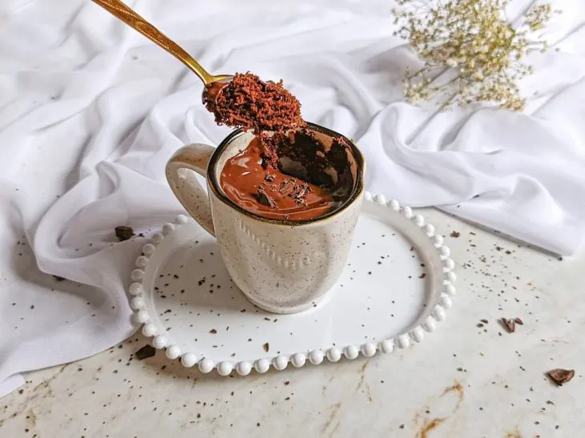
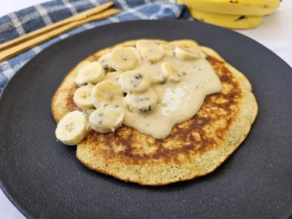

Bolo de Caneca de Chocolate
Ingredientes:
- 4 colheres (sopa) de farinha de trigo
- 4 colheres (sopa) de açúcar
- 2 colheres (sopa) de chocolate em pó
- 1 ovo
- 3 colheres (sopa) de leite
- 3 colheres (sopa) de óleo
Modo de Preparo:
Junte todos os ingredientes na caneca e mexa bem com um garfo até a massa ficar homogênea. Leve ao micro-ondas por 3 minutos em potência alta.
Omelete Simples de Queijo
Ingredientes:
- 2 ovos
- 2 fatias de queijo muçarela
- 1 colher (sopa) de manteiga
- Sal e tempero verde a gosto
Modo de Preparo:
Bata os ovos em um prato com o sal. Derreta a manteiga na frigideira e despeje os ovos. Quando começar a firmar, coloque o queijo, dobre a omelete ao meio e doure os dois lados.
Guacamole Prática
Ingredientes:
- 1 abacate maduro
- 1 tomate picado sem sementes
- 1/2 cebola roxa picada
- Suco de 1 limão
- Azeite, sal e coentro a gosto
Modo de Preparo:
Amasse a polpa do abacate com um garfo. Adicione o tomate, a cebola, o suco de limão, o azeite e o sal. Misture tudo delicadamente e sirva gelado.

Panqueca de Banana Fit
Ingredientes:
- 1 banana madura
- 1 ovo
- 2 colheres (sopa) de farelo de aveia
- 1 pitada de canela em pó
Modo de Preparo:
Amasse bem a banana em um prato. Misture o ovo, a aveia e a canela até formar uma massa homogênea. Cozinhe porções em uma frigideira antiaderente virando dos dois lados.
Batata Rústica ao Forno
Ingredientes:
- 3 batatas grandes
- 3 colheres (sopa) de azeite de oliva
- Sal, pimenta-do-reino e alecrim a gosto
- 3 dentes de alho com casca amassados
Modo de Preparo:
Lave bem as batatas e corte-as em gomos. Cozinhe em água fervente com sal por 5 minutos. Escorra, misture com o azeite, temperos e alho, e asse em forno alto por 40 minutos.